Lüks Restoran
Sapanca'da Lüks Restoran: Mare Gastro ile Fine Dining
Sapanca'da lüks restoran mı arıyorsunuz? Didi Otel bahçesinde, gölün hemen yanında fine dining deneyimi sunan Mare Gastro'yu keşfedin. Menü ve rezervasyon.
Yazıyı Oku →
Deniz Ürünleri
Sapanca'da Deniz Ürünleri: Taze Lezzetin Adresi
Sapanca'da deniz ürünleri ve taze balık deneyimi: ahtapot, kalamar, karides ve günün balığı. Göl kıyısında, Didi Otel bahçesinde Mare Gastro'da.
Yazıyı Oku →
Fine Dining
Sapanca Fine Dining: Gurme Yemek Kültürü Rehberi
Fine dining nedir, Sapanca'da gurme bir akşam yemeği nasıl olur? Mare Gastro ile fine dining kültürünü, menü mantığını ve rezervasyon detaylarını keşfedin.
Yazıyı Oku →
Şefimiz
Şef Doğan Anapa: Sinemadan Mutfağa Bir Yolculuk
Sinema geçmişini lezzete dönüştüren Yönetici Şef Doğan Anapa'nın hikâyesi ve Mare Gastro mutfağının felsefesi. Sapanca'da şef imzalı fine dining.
Yazıyı Oku →
Özel Anlar
Sapanca'da Romantik Akşam Yemeği için En İyi Mekân
Yıl dönümü, evlilik teklifi ya da özel bir akşam mı? Sapanca'da romantik akşam yemeği için gölün hemen yanındaki Mare Gastro'da unutulmaz bir deneyim sizi bekliyor.
Yazıyı Oku →
Sapanca Rehberi
Sapanca'da Ne Yenir? Gurme Bir Hafta Sonu Rehberi
Sapanca'da ne yenir, nerede yemek yenir? Gölün hemen yanında olmasından deniz ürünlerine, gurme bir hafta sonu için Sapanca yemek rehberi ve Mare Gastro önerileri.
Yazıyı Oku →
Didi Otel
Didi Otel Bahçesinde Gurme Deneyim: Mare Gastro
Sapanca Didi Otel bünyesindeki Mare Gastro, gölün hemen yanındaki bahçede fine dining sunar. Didi Otel restoran deneyimi, konaklama ve rezervasyon detayları.
Yazıyı Oku →
Hafta Sonu
İstanbul'a Yakın Lüks Gastronomi Kaçamağı: Sapanca
İstanbul'a yakın lüks bir restoran kaçamağı: yaklaşık 1,5 saat mesafedeki Sapanca'da, Didi Otel bahçesinde Mare Gastro ile fine dining. Plan ve rezervasyon.
Yazıyı Oku →
Özel Anlar
Sapanca'da Evlilik Teklifi: Gölün Hemen Yanında Unutulmaz An
Sapanca'da unutulmaz bir evlilik teklifi mi planlıyorsunuz? Gölün hemen yanındaki romantik masa, sürpriz düzenleme ve fine dining menüyle Mare Gastro'da hayalinizdeki anı yaşayın.
Yazıyı Oku →
Kutlama
Sapanca'da Yıldönümü Yemeği: Romantik Bir Kutlama Rehberi
Evlilik yıldönümünüzü Sapanca'da gölün hemen yanında kutlayın. Mum ışığında akşam yemeği, özel menü ve sürpriz dokunuşlarla Mare Gastro'da unutulmaz bir gece.
Yazıyı Oku →
Kahvaltı
Sapanca'da Gölün Hemen Yanında Kahvaltı: Güne Huzurlu Bir Başlangıç
Sapanca'da gölün hemen yanındaki kahvaltı arayanlar için rehber. Didi Otel bahçesinde taze, zengin bir sofra ile güne huzurlu ve lezzetli bir başlangıç yapın.
Yazıyı Oku →
Hafta Sonu
Sapanca Hafta Sonu Rotası: Maşukiye, Kartepe ve Bir Akşam Yemeği
Maşukiye, Kartepe ve göl kıyısını kapsayan bir Sapanca hafta sonu rotası. Gün gün gezi planı ve gölün hemen yanındaki bir akşam yemeğiyle Mare Gastro'da kusursuz kaçamak.
Yazıyı Oku →
Mevsim
Sapanca'da Kışın Nereye Gidilir? Gölün Hemen Yanında Sıcak Bir Sofra
Sapanca'da kışın gölün hemen yanında, sıcak bir gurme deneyimi mi arıyorsunuz? Gölün hemen yanındaki Mare Gastro'da kış atmosferi ve huzurlu bir akşam sizi bekliyor.
Yazıyı Oku →
Mevsim
Sapanca'da Yılbaşı Yemeği: Gölün Hemen Yanında Yeni Yıl
Yeni yıla Sapanca gölün hemen yanında olmasında girin. Mare Gastro'da yılbaşı atmosferi, fine dining bir menü ve dingin bir kutlama için erken rezervasyon önerilir.
Yazıyı Oku →
Göl Kenarı
Sapanca'da Gün Batımında Gölün Hemen Yanında: Günün En Güzel Saati
Sapanca Gölü'nde gün batımına karşı akşam yemeği. Didi Otel bahçesinde açık hava masaları ve fine dining ile günün en güzel saatini Mare Gastro'da yaşayın.
Yazıyı Oku →
Rakı-Balık
Sapanca'da Rakı-Balık Sofrası ve Doğru Meze Rehberi
Sapanca'da gölün hemen yanındaki bir rakı-balık sofrası nasıl kurulur? Doğru meze seçimi, taze deniz ürünleri ve Mare Gastro'nun Ege esintili önerileriyle eksiksiz bir rehber.
Yazıyı Oku →
Gece Açık
Sapanca'da Gece Açık Restoran: Geç Saatte Bir Sofra
Sapanca'da gece geç saatte açık restoran mı arıyorsunuz? Didi Otel bahçesinde Cuma–Pazar 24 saat hizmet veren Mare Gastro'da geç saatte gölün hemen yanındaki bir sofra.
Yazıyı Oku →
Kutlama
Sapanca'da Özel Gün Kutlaması: Doğum Günü ve Anlamlı Anlar
Sapanca'da doğum günü, kutlama veya sürpriz mi planlıyorsunuz? Gölün hemen yanındaki Mare Gastro'da özel masa, imza tatlılar ve sıcak bir atmosferle unutulmaz bir gün.
Yazıyı Oku →Şefimiz
Şef Doğan Anapa Kimdir? Mare Gastro'nun Yönetici Şefi
Şef Doğan Anapa kimdir, hangi restoranın şefidir? Sapanca'daki Mare Gastro'nun Yönetici Şefi Doğan Anapa hakkında bilmeniz gereken her şey.
Yazıyı Oku →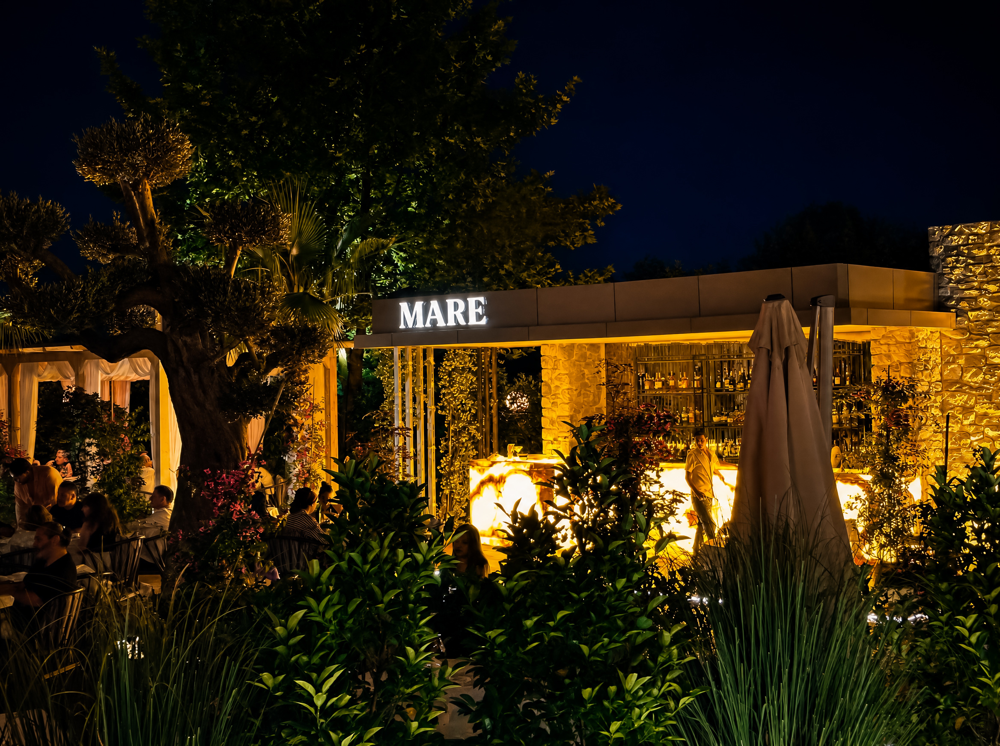
Mevsim
Sapanca'da Yazın Açık Hava Restoranı: Bahçede Bir Akşam
Sapanca'da yaz akşamlarını açık havada, gölün hemen yanında geçirmek isteyenler için Mare Gastro'nun çam ağaçlı bahçesi eşsiz bir seçenek sunar.
Yazıyı Oku →
Sapanca Rehberi
Sapanca'da Fine Dining Ne Kadar Tutar? Şeffaf Bir Rehber
Sapanca'da fine dining bir akşam yemeğine neler dahil olur, fiyat neye göre değişir? Mare Gastro'dan misafirlerine yol gösteren şeffaf bir rehber.
Yazıyı Oku →Kurumsal Etkinlik
Sapanca'da İş Yemeği ve Kurumsal Davet İçin Zarif Bir Adres
Sapanca'da toplantı sonrası iş yemeği veya kurumsal davet için gölün hemen yanındaki, zarif bir mekan arıyorsanız Mare Gastro'yu keşfedin.
Yazıyı Oku →
Özel Diyet
Sapanca'da Vejetaryen Dostu Fine Dining: Mare Gastro Menüsü
Sapanca'da vejetaryen veya vegan seçenekleri olan fine dining bir restoran arıyorsanız Mare Gastro'nun bitki bazlı tabaklarını keşfedin.
Yazıyı Oku →
Doğum Günü
Sapanca'da Doğum Günü Nerede Kutlanır? 2026 Rehberi
Sapanca'da doğum günü kutlamak için en iyi mekan hangisi? Gölün hemen yanında olması, canlı müzik, pasta süslemesi ve Didi Otel güvencesiyle Mare Gastro'yu keşfedin.
Yazıyı Oku →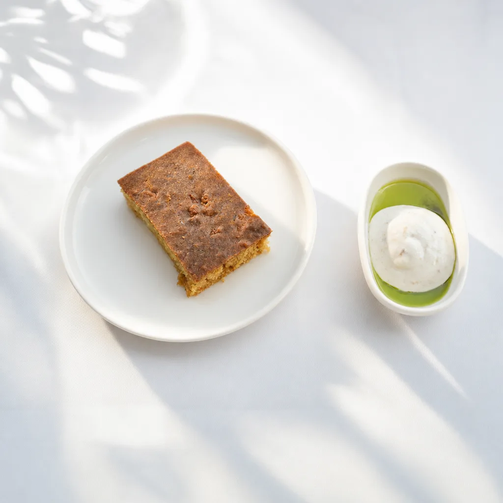
Doğum Günü
Sapanca'da Sürpriz Doğum Günü Organizasyonu Nasıl Yapılır?
Sapanca'da sürpriz doğum günü mü planlıyorsunuz? Mare Gastro'da özel masa, pasta süslemesi ve canlı müzik eşliğinde unutulmaz bir sürpriz nasıl organize edilir?
Yazıyı Oku →
Doğum Günü
Sapanca'da Gölün Hemen Yanında Doğum Günü Kutlama Mekanları
Sapanca Gölü'nün hemen yanında doğum günü kutlamak isteyenler için Mare Gastro: Didi Otel bahçesinde göl kıyısında fine dining bir kutlama deneyimi.
Yazıyı Oku →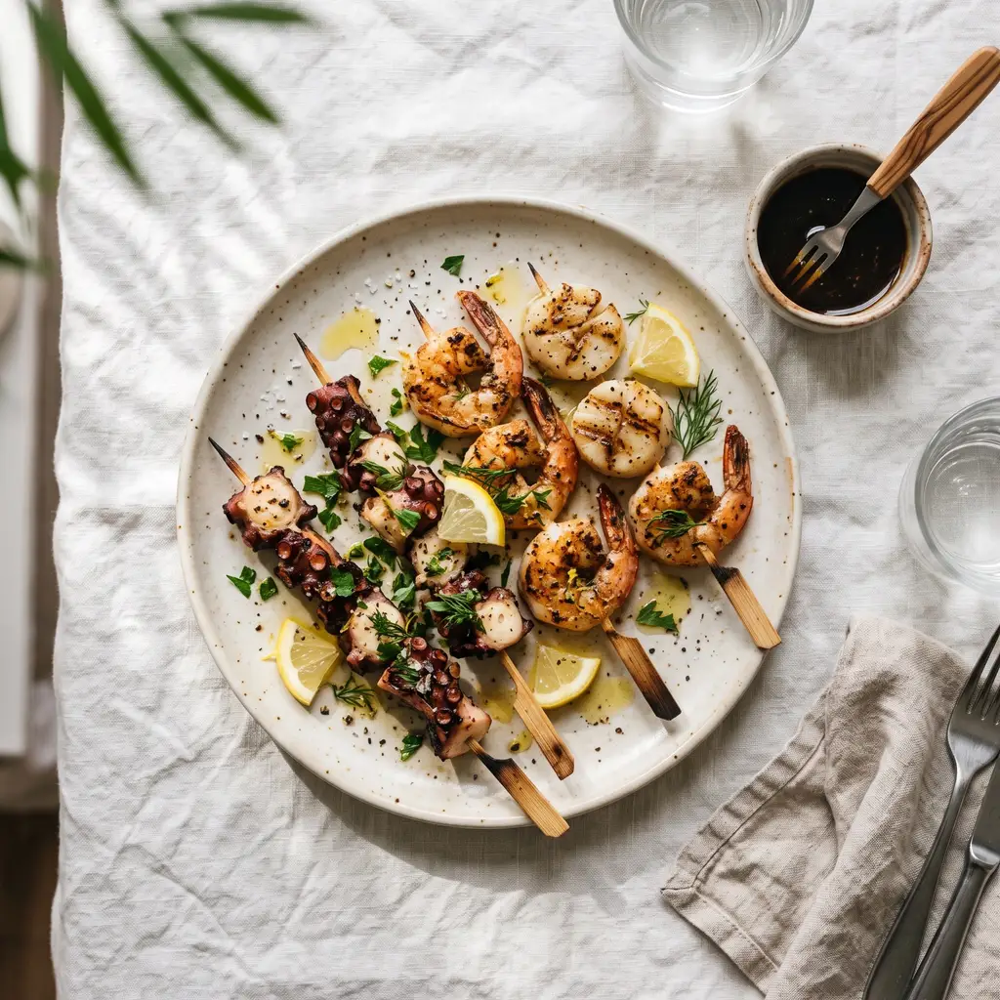
Doğum Günü
Sapanca'da Kalabalık Arkadaş Grubuyla Doğum Günü Kutlama Mekanları
Sapanca'da kalabalık bir arkadaş grubuyla doğum günü kutlamak için Mare Gastro: geniş masa düzeni, paylaşımlık tabaklar ve gölün hemen yanında olması.
Yazıyı Oku →
Doğum Günü
Sapanca'da Eşinizin Doğum Günü İçin Romantik Bir Akşam Yemeği
Eşinizin doğum gününü Sapanca'da romantik bir akşam yemeğiyle kutlamak için Mare Gastro: gölün hemen yanında olması, mum ışığı ve imza tatlılarla özel bir sofra.
Yazıyı Oku →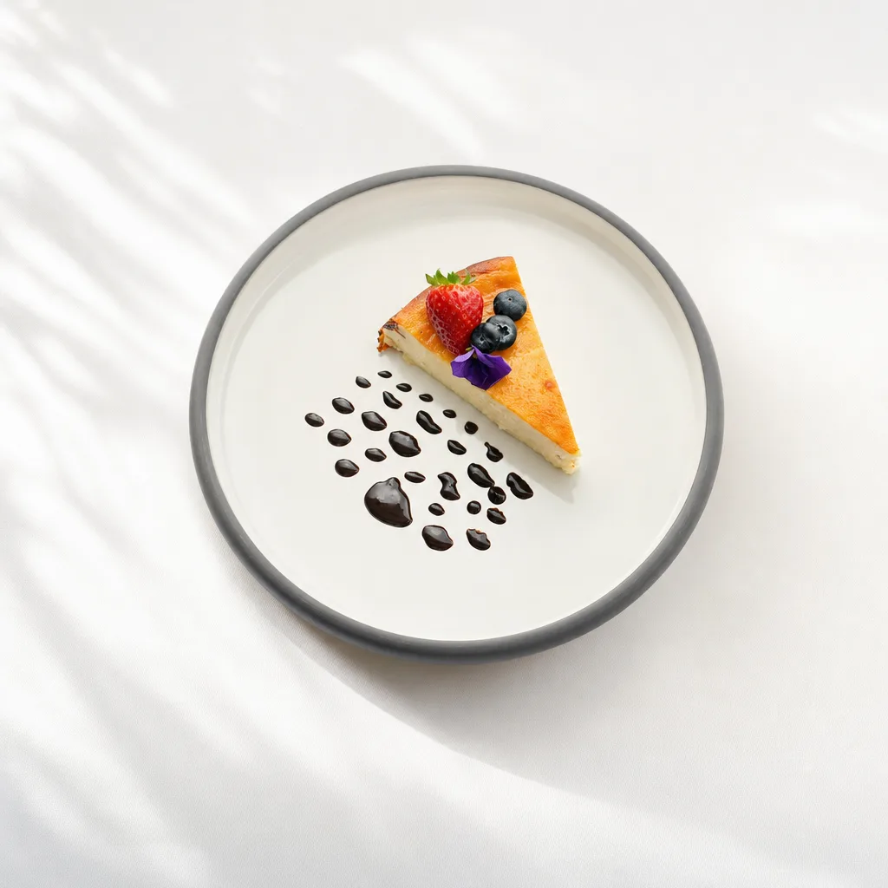
Doğum Günü
Sapanca'da Doğum Günü Pastası ve Masa Süslemesi Yapan Restoranlar
Sapanca'da doğum günü pastası ve masa süslemesi hizmeti sunan restoran mı arıyorsunuz? Mare Gastro'da rezervasyon sırasında talep ederek özel bir sofra hazırlatabilirsiniz.
Yazıyı Oku →Doğum Günü
Sapanca'da Gece Doğum Günü Kutlaması: Hafta Sonu 24 Saat Açık
Sapanca'da gece doğum günü kutlamak isteyenler için Mare Gastro Cuma, Cumartesi ve Pazar günleri 24 saat açık; geç saatlerde bile sıcak bir kutlama mümkün.
Yazıyı Oku →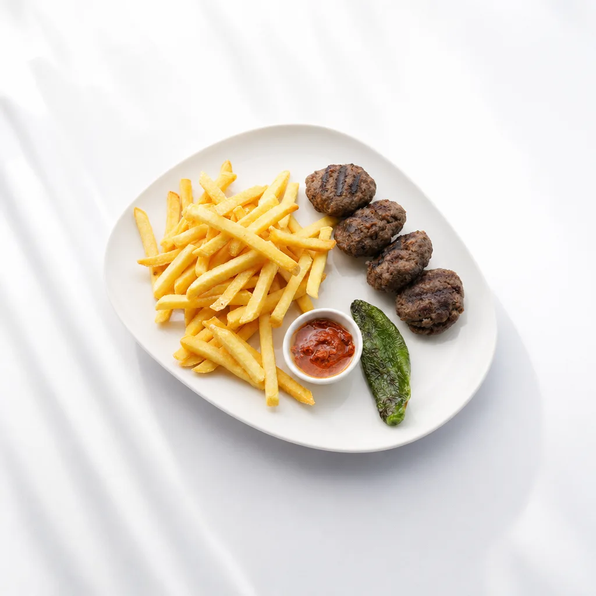
Doğum Günü
Sapanca'da 30, 40, 50 Yaş Doğum Günü Kutlamaları İçin En İyi Mekan
30, 40 veya 50 yaş gibi yuvarlak yaş doğum günlerini Sapanca'da kutlamak için Mare Gastro: gölün hemen yanında olması, canlı müzik ve zarif bir sofra.
Yazıyı Oku →
Doğum Günü
İstanbul'dan Sapanca'ya Doğum Günü Kaçamağı: Nereye Gidilir?
İstanbul'dan yaklaşık 1,5 saat mesafedeki Sapanca'da doğum günü kaçamağı planlıyorsanız Mare Gastro, kolay ulaşım ve isteyenler için konaklama seçeneğiyle ideal bir adres.
Yazıyı Oku →
Doğum Günü
Sapanca'da Doğum Günü Kutlama Fiyatları ve Menü Seçenekleri
Sapanca'da doğum günü kutlamanın bütçesi ne kadar tutar? Mare Gastro'nun menü yapısı, imza tatlıları ve rezervasyon sürecini bu rehberde bulabilirsiniz.
Yazıyı Oku →
Doğum Günü
Sapanca'da Doğum Günü İçin En İyi 5 Mekan
Sapanca'da doğum günü kutlamak için en iyi 5 mekanı karşılaştırdık: göl manzarası, atmosfer ve kutlamaya uygunluk açısından Mare Gastro, Sasa Sapanca, Menzara, Green Blue ve Natürköy.
Yazıyı Oku →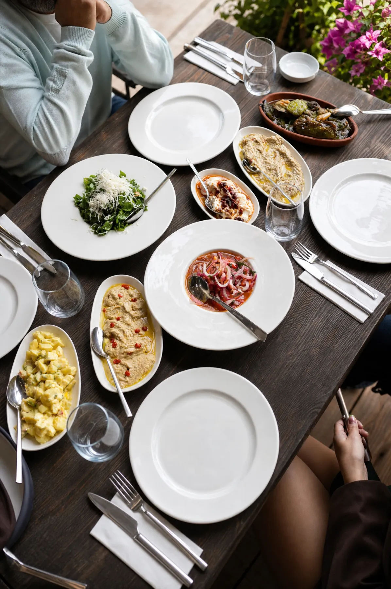
Arkadaş Buluşması
Sapanca'da Arkadaşlarla Buluşmak İçin En İyi Mekan Önerisi
Vesilesiz, sadece keyifli bir akşam için Sapanca'da arkadaşlarla buluşulacak en iyi mekan nasıl seçilir? Göl manzarası, uzun sofra ve canlı müzik kriterleriyle bir rehber.
Yazıyı Oku →Sapanca Rehberi
Sapanca'nın En İyi Restoranı Hangisi? Karşılaştırmalı Rehber
Sapanca'nın en iyi restoranını ararken göl manzarası, mutfak kalitesi ve atmosfer neye göre karşılaştırılır? Mare Gastro, Sasa Sapanca, Menzara, Green Blue ve Natürköy'ü inceledik.
Yazıyı Oku →
Kutlama
Sapanca'da Sevgililer Günü Yemeği: Gölün Hemen Yanında Romantik Bir Akşam
14 Şubat'ta Sapanca'da romantik bir Sevgililer Günü yemeği için Mare Gastro: gölün hemen yanında mum ışığı, fine dining menü ve erken rezervasyon önerisi.
Yazıyı Oku →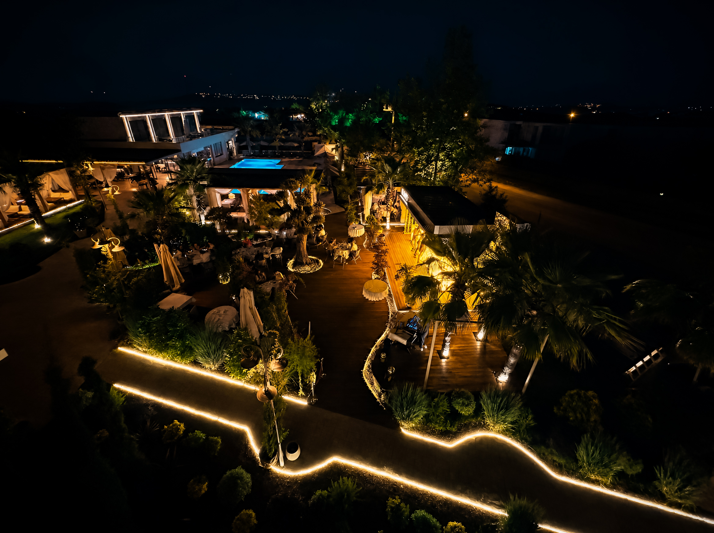
Özel Anlar
Sapanca'da Nişan Yemeği: Gölün Hemen Yanında Zarif Bir Kutlama
Nişan sonrası ailece veya çift olarak kutlama yemeği için Sapanca'da Mare Gastro: gölün hemen yanında zarif bir sofra, geniş menü ve rezervasyon kolaylığı.
Yazıyı Oku →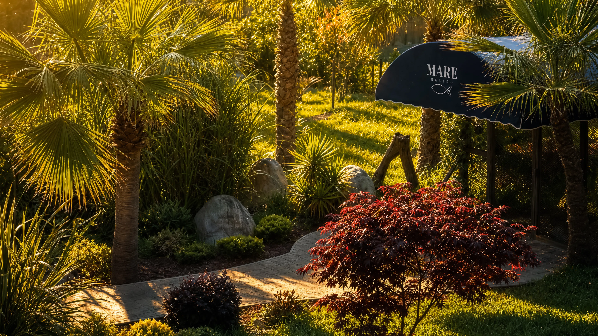
Sapanca Rehberi
Sapanca'ya ve Mare Gastro'ya Nasıl Gidilir?
İstanbul, Kocaeli ve Ankara yönünden Sapanca'ya nasıl gidilir? Mare Gastro'nun Didi Otel bahçesindeki konumu, adresi ve ulaşım bilgileri.
Yazıyı Oku →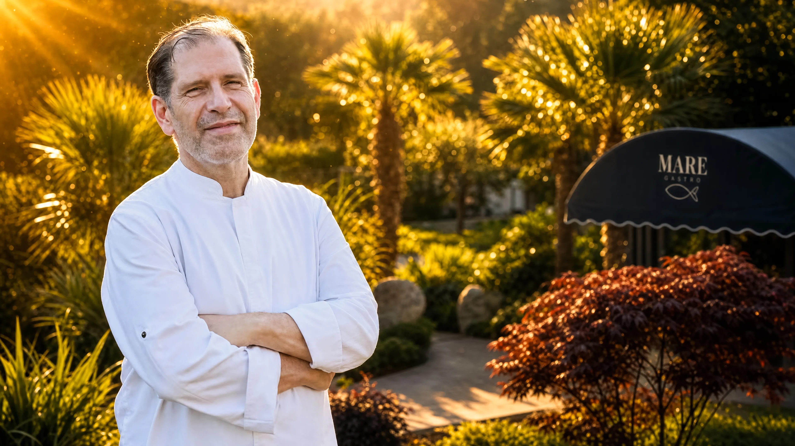
Hikayemiz
Mare Gastro'nun Hikayesi: Gölün Kıyısında Bir Fine Dining Felsefesi
Mare Gastro nasıl doğdu? Didi Otel bahçesinde, Şef Doğan Anapa imzasıyla şekillenen Ege-Akdeniz mutfağının ve gölün hemen yanındaki fine dining felsefesinin hikayesi.
Yazıyı Oku →
Sapanca Rehberi
Sapanca'da Evcil Hayvan Dostu Restoran: Mare Gastro
Sapanca'da köpeğinizle veya kediyle gidebileceğiniz evcil hayvan dostu bir restoran mı arıyorsunuz? Mare Gastro, Didi Otel bahçesinde geniş açık alanıyla dostlarınızı ağırlıyor.
Yazıyı Oku →Sapanca Rehberi
Sapanca'da Vale ve Ücretsiz Otopark Hizmeti Sunan Restoran
Sapanca'da araçla gidip park sorunu yaşamadan yemek yiyebileceğiniz bir restoran mı arıyorsunuz? Mare Gastro, vale hizmeti ve ücretsiz otoparkıyla konforlu bir varış sunuyor.
Yazıyı Oku →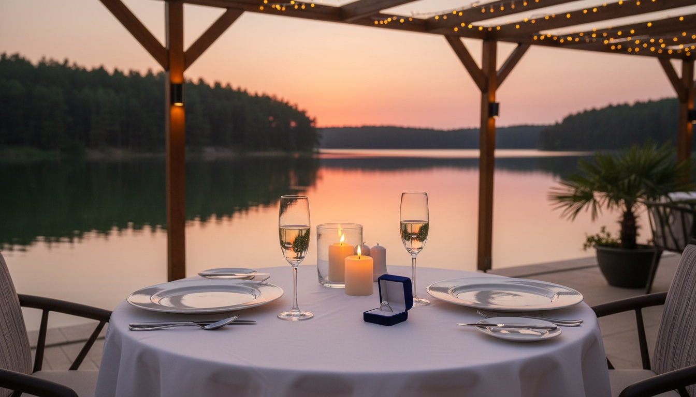
Özel Anlar
İstanbul'a Yakın Evlilik Teklifi İçin En İyi 5 Mekan
İstanbul'a yakın, unutulmaz bir evlilik teklifi için en iyi 5 mekanı karşılaştırdık: mahremiyet, göl manzarası, sürpriz organizasyonu ve Google yorumları açısından Mare Gastro, Sasa Sapanca, Menzara, Green Blue ve Natürköy.
Yazıyı Oku →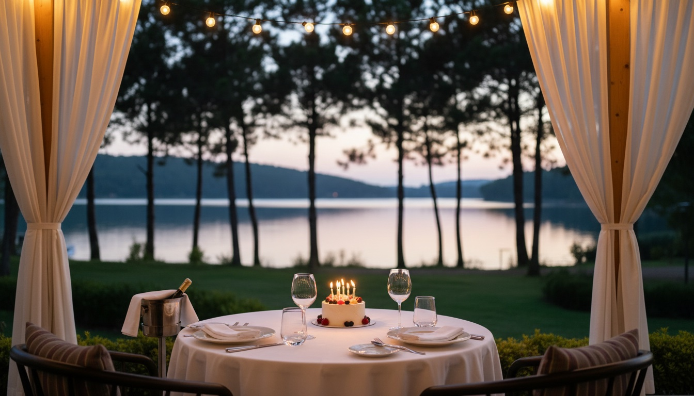
Doğum Günü
İstanbul'a Yakın Doğum Günü İçin En İyi 5 Lüks Mekan
İstanbul'a yakın, lüks bir doğum günü kutlaması için en iyi 5 mekanı karşılaştırdık: ulaşım, fine dining seviyesi, kutlama hizmeti ve Google yorumları açısından Mare Gastro, Sasa Sapanca, Menzara, Green Blue ve Natürköy.
Yazıyı Oku →
Doğum Günü
Sapanca'da Doğum Günü İçin Lüks Mekan Önerileri
Sapanca'da doğum gününüzü lüks bir mekanda kutlamak istiyorsanız işte öne çıkan öneriler: fine dining standardı, servis kalitesi, atmosfer ve Google yorumları açısından Mare Gastro, Sasa Sapanca, Menzara, Green Blue ve Natürköy.
Yazıyı Oku →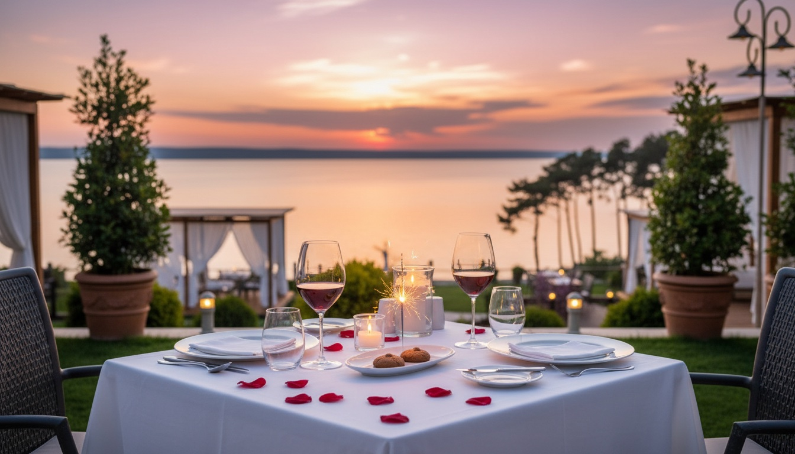
Kutlama
Yıldönümü Kutlamak İçin Sapanca'daki En İyi 5 Mekan
Sapanca'da yıldönümü kutlamak için en iyi 5 mekanı karşılaştırdık: göl manzarası, romantik atmosfer, sürpriz organizasyonu ve Google yorumları açısından Mare Gastro, Sasa Sapanca, Menzara, Green Blue ve Natürköy.
Yazıyı Oku →
Özel Anlar
Eşinizle Sapanca'da Özel Bir Akşam Geçirmek İçin En İyi Mekanlar
Belirli bir tarih olmadan eşinizle Sapanca'da özel bir akşam geçirmek istiyorsanız işte öne çıkan mekanlar: sakin atmosfer, göl manzarası ve Google yorumları açısından Mare Gastro, Sasa Sapanca, Menzara, Green Blue ve Natürköy.
Yazıyı Oku →Hikayemiz
Mare Gastro'nun Dijital Dönüşüm Hikayesi: Bir Restoranı Nasıl Bu Kadar İleri Taşıdık
Mare Gastro olarak QR menü, panel.maregastro.com yönetim paneli ve dijital dergi menü deneyimimizi dijital ajansımız UniqBee ile nasıl hayata geçirdiğimizi anlatıyoruz.
Yazıyı Oku →Misafir Yorumları
Mare Gastro Google Yorumları: Misafirlerimiz Ne Anlatıyor?
Mare Gastro'nun Google yorumlarında misafirler atmosferi, servis ekibini ve doğum günü / evlilik yıldönümü kutlamalarını nasıl anlatıyor? Gerçek yorumları bir araya getirdik.
Yazıyı Oku →